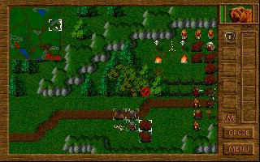
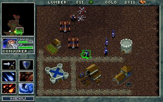

|
"Popatrz, Warcraft po polsku" - to zdanie by³o najczêœciej wypowiadanym przez graczy zwiedzaj¹cych stoisko firmy User podczas targów PlayBox w 1996 roku, na których to mia³a swoj¹ premierê pierwsza czêœæ serii Polanie. W³aœciwie ten pierwszy klasyczny polski rts ju¿ od pocz¹tku zakodowa³ siê w g³owach rodzimej braci graj¹cych w³aœnie jako "polski Warcraft". Dlatego te¿ zdecydowa³em siê napisaæ ten artyku³ porównuj¹cy te dwie podobne, a jednak ró¿ne od siebie, gry. Jeszcze do niedawna seria Warcraft kojarzy³a mi siê tylko i wy³¹cznie z drug¹ jej czêœci¹. Powód by³ iœcie banalny: po prostu nigdy nie uda³o mi siê wejœæ w posiadanie jej poprzedniczki. Zd¹¿y³em sobie jednak wypracowaæ, na podstawie materia³ów z internetu i prasy, opiniê na jej temat. Uwa¿a³em j¹ za bardzo przeciêtny tytu³, niedorastaj¹cy do piêt jej Westwood'owego odpowiednika, czyli Dune II : Battle for Arrakis. S³owa pochwa³y wobec Warcrafta traktowa³em z lekkim przymru¿eniem oka, poniewa¿ uwa¿a³em, ¿e to raczej przez wzgl¹d na drug¹ czêœæ tej serii, a nie rzeczywist¹ jakoœæ Warcrafta, s¹ one wypowiadane. Pewnego jednak razu wpad³em na pomys³, ¿eby mimo wszystko spróbowaæ zagraæ w Warcrafta I i samemu wyrobiæ sobie opiniê na jej temat. Kilka minut póŸniej 5-megowy plik œci¹ga³ siê z serwisu poœwiêconego klasyce gier komputerowych. Rozpakowa³em go i... sta³o siê! Ale wszystko po kolei. Przy pierwszym uruchomieniu gry od razu mia³em skojarzenie z Warcraft II. Identycznie wygl¹daj¹ce budynki, kopalnie, praktycznie te same jednostki, muzyka te¿ jakby znajoma. W³aœciwie to dobrze. Przyst¹pi³em zatem do rozgrywania pierwszej misji. Od tego momentu min¹³ nieca³y miesi¹c. Teraz koñczê ju¿ drug¹ kampaniê (orkami) i mogê powiedzieæ tylko jedno: ta gra to istne cudo. Nale¿y, wg mnie, do grona klasyki przez du¿e "K". Jest jedn¹ z tych gier, których siê nie zapomina i nie zapomni jeszcze przez d³u¿szy czas. Ale, ale... Ten tekst mia³ porównywaæ Warcrafta z Polanami, a ja na razie o tym ani s³owa.  Tytu³y te wydane zosta³y w rocznym odstêpie czasowym (Warcraft - I kwarta³ '95, Polanie - I kwarta³ '96), mimo to pod wzglêdem technicznym prezentuj¹ siê identycznie. Grafika w obydwu przypadkach to najzwyklejsze VGA, czyli 256 kolorów w rozdzielczoœci 320x200. Przy takich mo¿liwoœciach sprzêtowych o jakoœci grafiki decyduje jej artyzm lub, jak kto woli, umiejêtnoœæ wmówienia graczowi, ¿e ta kupa poruszaj¹cych siê pikselów to jego niezwyciê¿ony heros, z którym powinien siê identyfikowaæ. I pod tym wzglêdem obie gry spisuj¹ siê bardzo dobrze. Pewn¹ przewagê ma tutaj Warcraft. Nie wiem czy siê ze mn¹ zgodzicie, ale mnie osobiœcie grafika wydaje siê w tym tutule nieco lepsza. Autorzy u¿yli palety ciemniejszych, intensywniejszych kolorów, nadaj¹c grze odrobinê mroczniejszy klimat. Obserwuj¹c poszczególne elementy stworzonych œwiatów odnoszê wra¿enie, ¿e zespó³ Blizzarda w wiêkszym stopniu dopieœci³ swój produkt. Widoczne jest to w przypadku postaci, efektów rzucanych czarów, œrodowiska gry, a tak¿e wygl¹du samego interfejsu. Znacznie bardziej wyrównany poziom prezentuj¹ te gry, je¿eli chodzi o oprawê dŸwiêkow¹. Tak naprawdê wybór lepszego pod tym wzglêdem tytu³u jest spraw¹ indywidualn¹ i decyduje tutaj kwestia gustu. Bowiem zarówno w Polanach jak i w Warcrafcie odg³osy p³yn¹ce z komputerowych g³oœniczków w sposób idealny buduj¹ klimaty tych gier. Oprawa audio-wizualna... jaka jest - ka¿dy widzi i s³yszy. Jednemu mo¿e siê podobaæ, drugiemu ani trochê i ka¿dy mo¿e mieæ w³asne zdanie. S¹ jednak kryteria, wed³ug których gusta maj¹ o wiele mniej dopowiedzenia ni¿ fakty. Zacznijmy od podstawowych za³o¿eñ Polan i Warcrafta: POLANIE - mo¿emy zagraæ tylko jednym plemieniem - Polanami - walcz¹c przeciwko jednemu z czterech pozosta³ych plemion. Podczas rozgrywki mo¿emy wybraæ cel nastêpnego ataku, niestety dokonane przez nas wybory oraz odniesione sukcesy, b¹dŸ ich brak, nie maj¹ ¿adnego wp³ywu na dalszy przebieg gry. Rozgrywka opiera siê na jednym surowcu, którym jest mleko. WARCRAFT - mamy do wyboru dwie rasy: Ludzi i Orków, a dla ka¿dej z nich jedn¹ kampaniê. Graj¹c poszczególnymi stronami mo¿emy sterowaæ ró¿ni¹cymi siê od siebie jednostkami, zmusza to nas do stosowania ró¿nych taktyk. Dokonam teraz porównania tych dwóch gier pod kilkoma wzglêdami: POSTACIE P: 10 rodzajów, z tym ¿e normalnie mo¿emy stworzyæ osiem z nich (bez strzygi i niedŸwiedzia, ale tego ostatniego mo¿emy otrzymaæ w Miejscu Przemiany). W misjach specjalnych mamy imiennych bohaterów, w ca³ej grze jest ich szeœciu (Helwig Wiking, Enryk Bald, Marla Mocna, Dvarhk Oldrin, Widora, Krowa). Niestety poza nazw¹ nie odró¿niaj¹ siê one niczym wiêcej od swych bezimiennych odpowiedników. Niektóre postacie mog¹ u¿ywaæ czarów, jest ich 4 plus dwie umiejêtnoœci specjalne, do których nale¿y zaliczyæ "regeneracjê" strzygi oraz "doœwiadczenie" rycerza. W sk³ad wioski mog¹ wchodziæ budynki w szeœciu ró¿nych rodzajach. W: po 9 rodzajów na ka¿d¹ z ras, ale niektóre siê powtarzaj¹, dodatkowo podczas wykonywania niektórych zadañ natkniemy siê na 4 typy jednostek, których nie mo¿e stworzyæ ¿adna ze stron. W misjach specjalnych, podobnie jak w Polanach, mamy 4 bohaterów obdarzonych imionami (Garona, Griselda, Sir Anduin Lothar, Medivh the Warlock). Tutaj jednak autorzy posunêli siê nieco dalej i obdarzyli je nowym wygl¹dem oraz unikalnymi w³aœciwoœciami (na przyk³ad Medivh the Warlock mo¿e dalej i szybciej rzucaæ fireballe). Ka¿da z ras posiada dwie jednostki dysponuj¹ce czarami, których w sumie ró¿nych jest jedenaœcie (po 6 na stronê, z tym, ¿e jeden siê powtarza). Budynków mo¿emy wybudowaæ a¿ 8, jednak mimo ró¿nych nazw i wygl¹du u poszczególnych ras maj¹ one analogiczne funkcje. KAMPANIE P: tylko jedna, sk³adaj¹ca siê za to a¿ z 25 misji. Naszym celem jest zrewan¿owanie siê za krzywdy, jakie wyrz¹dzi³y nam s¹siednie plemiona. Jest ich cztery: Mazowszanie, Pomorzanie, Wieleci i Wiœlanie. Niestety, ale, poza odmiennymi barwami ubiorów, nie ró¿ni¹ siê one miêdzy sob¹ w ¿aden sposób. Po wykonaniu ka¿dego zadania ukazuje nam siê specjalna mapa z mo¿liwoœci¹ wyboru obszaru, na którym bêdzie toczyæ siê dalsza rozgrywka. Taka mo¿liwoœæ nie zmienia jednak faktu, ¿e gra jest liniowa i wyniki poszczególnych wypraw nie maj¹ ¿adnego wp³ywu na warunki wykonywania innych. W: zarówno Orkami, jak i LudŸmi mo¿emy rozegraæ jedn¹, 12-etapow¹ kampaniê. Koñcowym celem w ka¿dej z nich jest zniszczenie wrogiej rasy i uzyskanie w³adzy. Misje u³o¿one s¹ w niezmiennej kolejnoœci. MISJE W poszczególnych misjach bêdziemy musieli wykonywaæ ró¿ne zadanie. Mog¹ one polegaæ na: - rozbudowie w³asnej wioski i zniszczeniu wroga, [WP] - zniszczeniu wszystkich przeciwników, z tym ¿e sami okreœlon¹ liczbê wojów, bez mo¿liwoœci tworzenia nowych, [WP] - odbiciu zaprzyjaŸnionej postaci i eskortowaniu jej w bezpieczne miejsce, [WP] - doprowadzeniu jakiejœ wa¿nej postaci do Magicznego Krêgu, [P] - penetrowaniu podziemnych jaskiñ w ró¿nych celach, [W] - walczeniu przeciwko tej samej rasie, je¿eli wyniknie to z fabu³y, [W] - zg³adzeniu wrogiego bohatera. [W] Na tym polu doœæ wyraŸn¹ przewagê ma Warcraft. Dziêki wiêkszemu urozmaiceniu wykonywanych zadañ, gracz nie odczuwa znudzenia. Bardzo du¿e znaczenie ma tak¿e fakt, ¿e w przypadku gry Blizzarda w³aœciwie ka¿da misja zaskakuje nas czymœ nowym: now¹ jednostk¹, nowym budynkiem, nietypowym zadaniem czy zróŸnicowan¹ sceneri¹ (bagna, podziemia). W Polanach zaœ mamy tylko dwa "poziomy technologiczne". W najlepszym przypadku ju¿ w okolicach szóstej misji widzieliœmy w³aœciwie wszystko, co gra ma nam do zaoferowania. To stanowczo za wczeœnie! INTERFEJS To chyba jedyny element, o którym mo¿emy powiedzieæ, ¿e jest bezapelacyjnie lepszy u Polan. Mo¿liwoœæ grupowania jednostek oraz "inteligentne kursory" znakomicie u³atwiaj¹ce grê. No, ale w koñcu programiœci z Krakowa byli m¹drzejsi o ca³y rok, który da³ nam przecie¿ boskie Command & Conquer: Tiberian Dawn. Chocia¿ patrz¹c na to z drugiej strony, mo¿na powiedzieæ, ¿e do sterowania w Warcrafcie mo¿na siê ³atwo i szybko przyzwyczaiæ - póŸniej ju¿ o tym nie myœlimy. MULTIPLAYER  W tej kwestii sprawa jest banalnie prosta: w Warcrafcie tryb multiplayer mamy, w Polanach nie! I to jest w³aœciwie najwiêkszy minus tej gry. Programiœci z Blizzarda byli pierwszymi, którzy umo¿liwili graczom zmierzenie siê z ¿ywym przeciwnikiem. Mo¿na przez to zrobiæ za poœrednictwem modemu, sieci lokalnej lub kabla szeregowego (z wyjœciem na COM). Do tego trybu stworzone zosta³o kilkanaœcie map. W ka¿dej partii mamy mo¿liwoœæ ustalenia zasobów posiadanych na pocz¹tku gry oraz rasy, jak¹ bêdziemy grali. Wielka szkoda, ¿e twórcy Polan nie poradzili sobie z problemem zaimplementowania tego trybu w swojej grze. Unikalne rozwi¹zania zastosowane w tej grze, dotycz¹ce dostêpnoœci surowca oraz sposobu jego pozyskiwania, z pewnoœci¹ wymusi³yby na graczach opracowanie nowych sposobów na rozgrywanie batalii. A tak, szkoda... Pora na podsumowanie przedstawionych powy¿ej informacji i udzielenie odpowiedzi na pytanie: która gra jest lepsza? Staraj¹c siê byæ obiektywnym jestem zmuszony wrêczyæ wieniec laurowy... Warcraftowi. Zgodz¹ siê ze mn¹ Ci z Was, którzy mieli doczynienia z obydwiema tymi grami. Nasz zwyciêzca jest produktem oferuj¹cym potencjalnym graczom znacznie wiêcej ni¿ jego konkurent. Mo¿naby siê oczywiœcie spieraæ o dŸwiêk czy klimat gry. To ju¿ jest jednak kwesti¹ gustu. Prawdopodobnie wiêkszoœci z polskich graczy bardziej spodoba³ siê s³owiañski nastrój i humor wype³niaj¹cy Polan po brzegi. Ten element z pewnoœci¹ by³ kluczowym w drodze Polan do sukcesu w Polsce, ale to Warcraft jest gór¹. Tak czy siak ka¿da z nich warta jest czasu jaki im poœwiêci³em i zalecam do spróbowania. Taka jest moja opinia. Je¿eli macie odmienn¹ opiniê na ten temat, lub tak¹ sam¹: wyraŸcie j¹ na forum. |